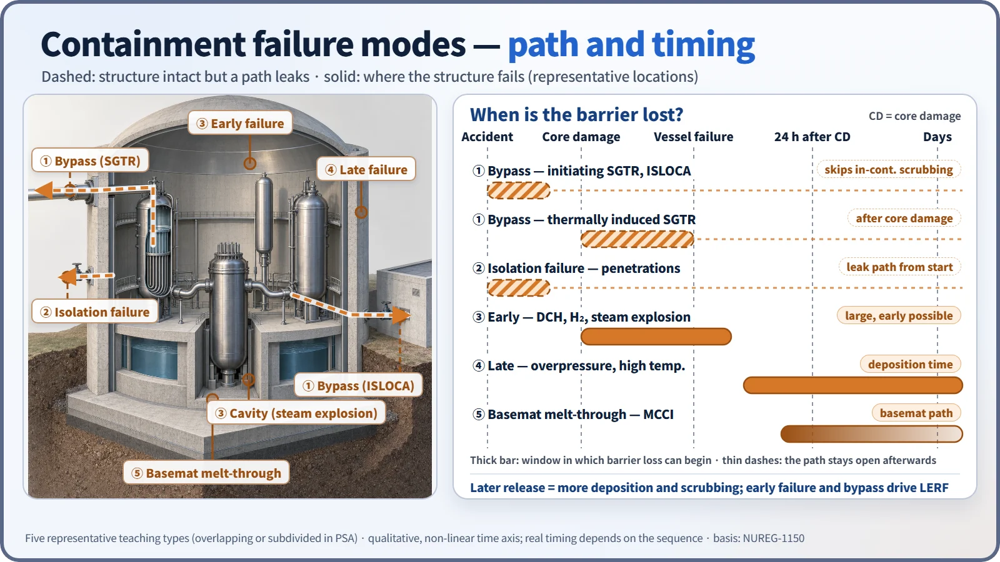
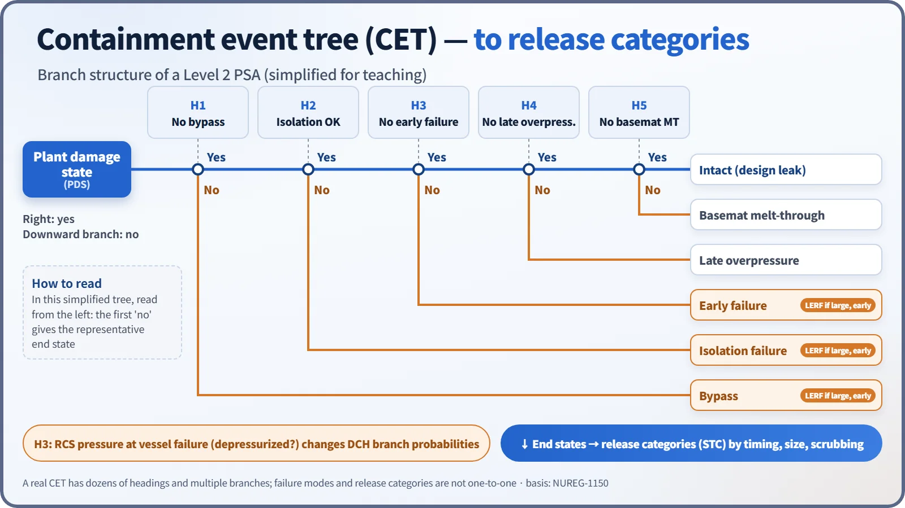
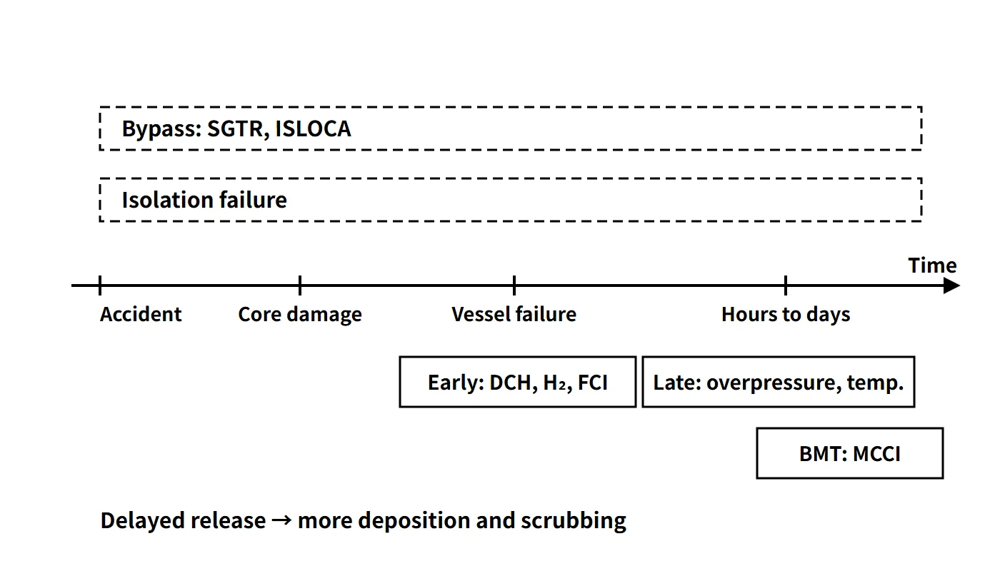

Accidents, Safety Analysis & Severe Accidents · C-SA-005
Containment Failure Modes — Bypass, Isolation Failure, Early and Late Failure, and Basemat Melt-Through
Bypass, isolation failure, early and late failure and basemat melt-through, from damage mechanisms to release categories and mitigation features.
Containment failure modes are the types of path and timing by which the containment loses its function as a barrier against the release of radioactive material in a severe accident: bypass, isolation failure, early failure, late failure and basemat melt-through. The key point is that the term covers not only cases where the structure breaks, but also cases where the structure is intact yet the barrier was never closed (isolation failure) or the release never passes through the barrier at all (bypass).
Principle and mechanism
Two classification axes: path and timing
Failure modes are sorted by release path (does the release pass through the containment atmosphere?) and timing (before or after reactor vessel failure?). The earlier the failure, the less chance aerosols have to deposit or be scrubbed, and the more likely a release before the public has been evacuated, so the risk is larger. NUREG-1150 (1990) grouped release categories on this basis into bypass, isolation failure, early, late and intact. The five types below are a representative teaching classification; in an actual PSA they overlap or are subdivided further depending on the plant and the purpose of the analysis (BMT is sometimes grouped with late failure).
| Mode | Representative mechanisms | Timing | Release characteristics |
|---|---|---|---|
| Bypass | SGTR, ISLOCA (initiating); thermally induced SGTR (after core damage) | Early in the accident or after core damage | Bypasses scrubbing inside containment; can be large and early |
| Isolation failure | Isolation valve fails to close, open penetration | From the start of the accident | Leak path from the outset |
| Early failure | HPME/DCH, hydrogen combustion/detonation, steam explosion, rocket mode | Before or just after vessel failure | Large release possible before evacuation (main contributor to LERF) |
| Late failure | Overpressure by steam and non-condensable gases, high temperature | Hours to days | Generally smaller, as deposition and scrubbing have more time |
| Basemat melt-through (BMT) | Concrete erosion by MCCI | Long after vessel failure (condition dependent) | Basemat and soil path; atmospheric release generally small |

In some PSAs, a sequence in which containment heat removal fails and the containment fails by overpressure before the reactor vessel fails is sometimes treated separately as containment failure before reactor vessel breach (CFBRB, etc.). The classical WASH-1400 (1975) notation — α (in-vessel steam explosion), β (isolation failure), γ (hydrogen combustion), δ (overpressure) and ε (melt-through) — is also still widely used. Later studies assessed the probability of α-mode failure as very low.
Damage mechanisms by mode
- HPME/DCH: if the vessel fails while the RCS is at high pressure, melt is ejected as fine particles that heat the containment atmosphere directly; together with hydrogen combustion the pressure rises sharply.
- Hydrogen combustion and detonation: deflagration of hydrogen from the Zr–steam reaction and MCCI, flame acceleration, and the dynamic loads of deflagration-to-detonation transition (DDT).
- Steam explosion (FCI): after the melt fragments, the vapor films collapse at once and a shock wave forms. An in-vessel explosion raises the concern of an upper-head missile; an ex-vessel explosion loads the cavity structure.
- Overpressure and high temperature: decay-heat steam and CO, CO₂ and H₂ from MCCI accumulate and pressurize the containment slowly; high temperature degrades penetration seals.
- MCCI and BMT: the melt decomposes and erodes the concrete, releases gases and penetrates the foundation.
- Bypass: steam generator tube rupture, or creep rupture of tubes by natural circulation of hot gas in a high-pressure, dry SG; failure of a low-pressure system boundary (ISLOCA).
- Rocket mode: the reaction force of a high-pressure vessel failure moves the vessel and damages penetrating piping.
What it means in a plant
Use in Level 2 PSA
Level 1 core damage sequences are grouped into plant damage states (PDS), followed through the headings of the containment event tree (CET) (bypass? → isolation → RCS pressure at vessel failure → early failure → cavity cooling → late failure), and the end states are grouped into release categories (STC, source term categories). Branch probabilities are set by overlaying the load distribution on the containment fragility curve (conditional failure probability as a function of pressure). The RCS pressure at vessel failure (depressurized or not) is not a heading that decides failure directly; it is a state variable that changes the branch probability of early failure such as DCH. End states are assigned to release categories again by release timing, magnitude and scrubbing, and failure modes and release categories are not one-to-one. Early failure, bypass and isolation failure are the main contributors to LERF (large early release frequency).

Pressure margin: the APR1400 example
The APR1400 containment design pressure is 60 psig (about 0.515 MPa absolute). A severe accident assessment compares the calculated maximum containment pressure with an acceptance pressure set for that assessment; neither the assessed load nor the acceptance criterion is an ultimate failure pressure. The likelihood of failure is evaluated separately with the ultimate pressure capacity and the fragility curve.
Threats and mitigation features (APR1400 example)
| Threat | Failure mode | Mitigation feature |
|---|---|---|
| ① Combustion or explosion of combustible gases | Early, late | 30 PARs and 10 igniters (hydrogen mitigation system) |
| ② High temperature or overpressure | Late; before vessel failure | Sprays, emergency containment spray backup system (ECSBS), sustained water source and heat removal |
| ③ MCCI | Late overpressure, BMT | Cavity flooding system (CFS), cavity designed for melt spreading and cooling |
| ④ HPME | Early | Safety depressurization and vent system (rapid depressurization by POSRV) |
| ⑤ DCH | Early | Rapid depressurization + cavity geometry that limits melt dispersal |
| ⑥ FCI (steam explosion) | Early | Assessment of cavity structural capacity against dynamic loads (considered together with the cooling benefit of flooding) |
| ⑦ Bypass such as SG creep | Bypass | RCS depressurization, maintaining SG feedwater, isolating bypass paths |
HPME and DCH are separate threats, but their countermeasure (depressurization) is shared. Isolation failure is managed with isolation signals and local leak rate testing (LLRT).
Regulatory and design criteria
The criteria below are examples from the United States (US NRC) and the IAEA safety standards.
| Basis | Key point |
|---|---|
| SECY-93-087 | Leak-tight barrier maintained for about 24 hours after core damage (steel Service Level C, concrete Factored Load) |
| SECY-90-016 | US advanced reactor policy goal: conditional containment failure probability (CCFP) of about 0.1 |
| 10 CFR 50 App. A and J | GDC 50 and 53–57 (design margin, isolation); leak rate testing |
| IAEA SSR-2/1 Rev.1 | Practical elimination of early or large releases |
Easily confused pairs
| Bypass | Isolation failure | Early failure | Late failure | |
|---|---|---|---|---|
| Structural integrity | Maintained | Maintained | Lost | Lost |
| Path | Systems outside containment | Open penetration | Failure location | Failure location |
| Spray and deposition scrubbing | None | Partial | Short | Large |
| Typical cause | SGTR, ISLOCA | Valve fails to close | DCH, detonation | Overpressure, high temperature |
Using the design pressure (60 psig) as the failure pressure is wrong. Failure is judged with the ultimate pressure capacity and fragility curve, which are far above the design pressure. BMT progresses most slowly and follows the basemat path, so it is generally not the mode with the largest atmospheric release. Bypass skips only the scrubbing inside containment; underwater scrubbing on the SG secondary side and similar effects are assessed separately.
Key points at a glance
- Definition: types of path and timing by which the containment loses its barrier function in a severe accident.
- Bypass: SGTR (spontaneous, or thermally induced creep), ISLOCA — bypasses scrubbing in containment; can be large and early.
- Isolation failure: open isolation valves or penetrations — managed by LLRT and isolation signals.
- Early failure: HPME/DCH, hydrogen detonation, steam explosion (α), rocket mode.
- Late failure: overpressure by steam and non-condensable gases, high temperature — hours to days.
- BMT: foundation erosion by MCCI — very slow, soil path.
- PSA: PDS → CET → release categories; early failure and bypass dominate LERF.
- Regulation: for example, US SECY-93-087 — leak-tight barrier maintained for about 24 hours after core damage; IAEA SSR-2/1 Rev.1 — practical elimination of early or large releases.
- APR1400: POSRV, HMS, CFS, ECSBS; design pressure 60 psig, which is not the failure pressure.
